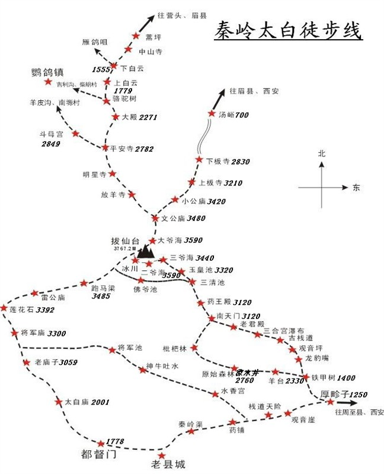
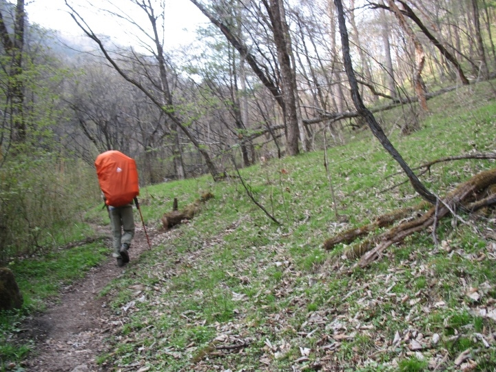
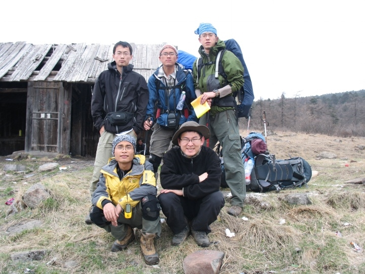
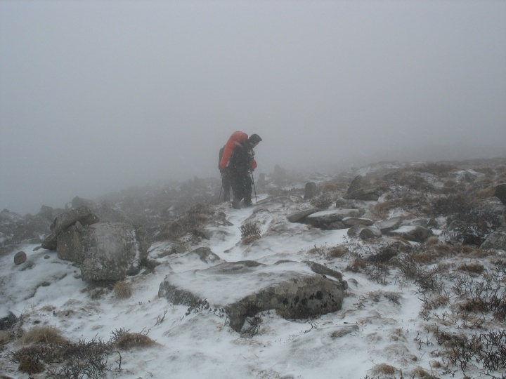
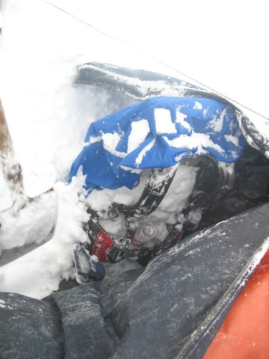
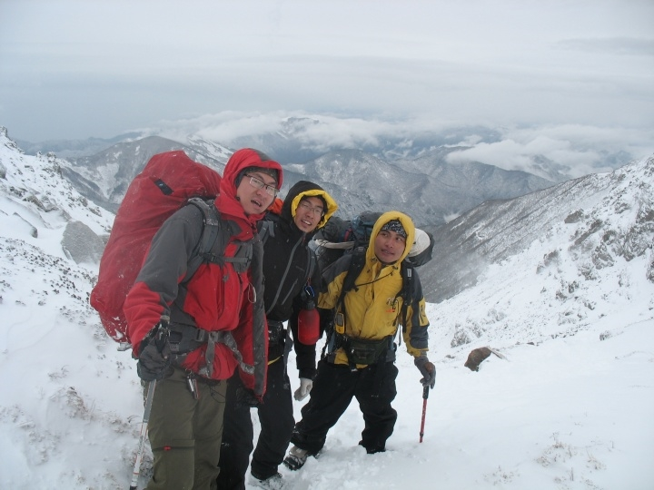
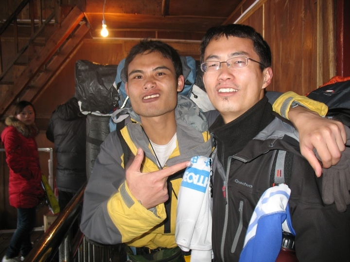
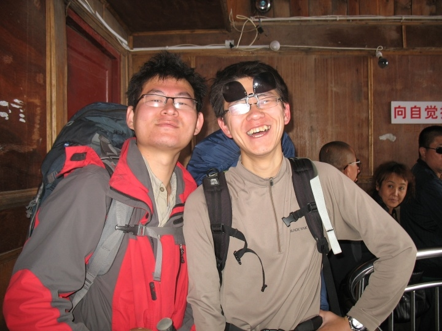

发信人: zzmax (zzmax), 信区: outdoor
标 题: 太白游记
发信站: 饮水思源 (2011年05月05日15:25:59 星期四)
协会没有虐线？？来太白吧！！
 screen.width - 200){this.width = screen.width - 200}">
29日下午4点，sx，财哥，松哥，我，四人从上海火车站出发，乘站票于3次日早上八点抵
达西安。与hyp短暂寒暄之后便立马到西客站搭乘一桑塔纳开往都督门。途中因山体滑坡导
致路况改变，于厚畛子换一面包车，下午3点抵达都督门。
 screen.width - 200){this.width = screen.width - 200}">
从都督门至太白庙，这一阶段由于火车上休息不够sx比较萎靡，走在队伍最后。海拔较低
，无明显高反。只是睡眠不充足导致头痛严重。还有，这一阶段的路况较好，顺着河谷走
，又加上地图上标有河流，比较给力，所以未发生走错路线的现象。到了太白庙，下包，
两分钟休整，吃点盐津葡萄补充体力，三点四十出发。继续沿着河谷走，途中遇一行11人
，比我们早一个小时开始，在接近大坪（离老庙子还有一个多小时路程）处被我们超越。
我们于六点十五分抵达大坪，海拔2467.考虑到前方有水源，火车上休息不够大家状态不好
，以及再走到原定营地老庙子还需要走夜路一个多小时，sx果断放弃继续老庙子扎营而在
大坪水源附近扎营。这一天的路线跟协会以前在江浙一带的路线个人感觉没有什么差别，
只是地域不同而已。第一天的晚餐是热餐，是这几天中干得最悠闲的一顿饭了。可惜没有
把带去腐败的培根拿出来煎了导致以后它一直在我的背包占了很大的重量。fb是可以，只
是需要分情况。清凉峰可以fb，新安江也可以fb，只要你背得动，不影响队伍行进，没有
人会怪你。只是有些新手，在对路线和自己能力不了解的情况下fb过头了。这会对队伍产
生极大的影响，有时甚至会发生危险。特别是某些长线，第一天第二天或许还能背得动，
但往往到了第三天以及以后，体能便显著下降。当然，这也跟协会大多数线路是两天线有
关。只要第一天撑过去，第二天一个上午再加一点下午的时间便可下山。我发现协会有时
候fb成风的现象比较严重，这大抵也是因为没有走过长线的原因吧。在大坪扎营时碰见西
安某高校四人队。一女三男。后被一下山队伍传其中两人在山里丢失。一阵心凉。晚上睡
觉，一宿天亮。中间下了雪籽，暗示第二天的悲剧。
1日早上，5点起床。收拾装备，煮热水，啃面包。六点四十分出发。而西安四人队比我们
早出发十几分钟。这也体现了一个问题，那就是我们队伍拖沓现象严重（主要是我）。每
一次出行都能发现这种现象。大家都不肯起来。就算起来了，动作也是慢吞吞的，收拾装
备的时候大多是一个人在忙，其他人干瞪眼。效率极其低下。sx说，一个新手和老手的区
别就是他的户外意识。他要有正确的户外观。户外，是一种运动，而不是旅游，更不是活
动。回归正题。一个多小时山路之后，于七点五十三到达老庙子。与昨天11人队相遇，得
知他们赶了两个多小时夜路，九点才到灵光台扎营。他们有向导。如果我们也这样做的话
，只怕后头会更危险。中途与西安四人队相遇，并要其中一人给我们拍了合照。
 screen.width - 200){this.width = screen.width - 200}">
我们刚到他们便走了。中午十一点多到达将军庙，海拔3293.财哥出现轻微高反。吃中饭。
同样也是我们刚到那四人便走。只是这是我们最后一次看见他们。从灵光台到将军庙的路
上开始下雪，到达将军庙时开始起雾。
10点半左右，我们出发。开始这一行中最困难的路段。从将军庙到万仙阵的尼玛堆，我们
在将军山的一段路上走错了。走成了下山的路。幸亏后面11人队的向导赶来，把下到一半
的我们喊了回来。我们才得以继续。我们一直向北走，翻过几次山脊。风从右面刮来，夹
着雪籽，冰雹，脸刮得生疼。这时海拔3553.大家都有些高原反应。头痛，眩晕。
 screen.width - 200){this.width = screen.width - 200}">
从万仙阵到跑马梁路上，风，雪，雾继续成为障碍。而且，路上山脊多，高原反应剧烈。
大家呼吸急促，速度极慢。有时一条腿抬起准备发力时人便被风吹走。被风灌得满嘴，又
加上呼吸加速，眩晕感加重。人几乎是闭着眼睛在走。我一路压后，不敢拍照。怕只一拍
就跟不上前面的步伐。松哥睡眠不充足，导致高原反应最强烈，四肢麻木，甚至有些担心
命丧于此。财哥由于高反，帐篷给了hyp。hyp把帐篷放在脖子后面顶着，那样子着实令人
担心。一路悬崖，稍不小心帐篷一掉我们必完蛋。hyp辛苦。唉，这个路段各种危险。想起
来都后怕。对自己腐败感到深刻的鄙夷。不过，万幸的是四个小时之后我们终于平安到达
大爷海。海拔3614.到达宿营地之后，马上搭帐篷，钻进睡袋，保暖，回温。将近一个小时
之后，打水，烧饭。回过神来之后的我们终于有了些生气。雪下一晚，我们也跟着静了一
晚。
第二天一早，发现帐篷外雪有近30cm厚。把外帐完全盖住，帐内因此很温暖。
 screen.width - 200){this.width = screen.width - 200}">
不过，外帐的拉链坏了，雪漏了进来。所有的包都结了很多冰，背负完全被雪覆盖。天气
如此恶劣，我们放弃了登顶计划。准备下山。沿准备的保守方案下山。财哥手杖被埋雪中
。希望以后再去之时不会发现一堆的小手杖。。。10点出发。刚走上山时，风雪很大。我
一面流着鼻血一面往前赶。（要追上向导）等翻过一个山头，风小了很多。下山真比上山
容易。一路踩着软软的雪，心情比昨日轻松多了。
 screen.width - 200){this.width = screen.width - 200}">
只是好景不长，太阳出来了。雪晒化了。一路巨滑无比。碰到一百多人连穿敖泰。11天线
。貌似他们是全国救援队训练。表示非常想去连穿啊~一点到达小文公庙时休息，吃中饭。
。一个小时之后，到达上板寺。这里貌似是旅游区。人比较多。这个路上松哥也非常亢奋
。所到之处必留下其臀印。坐滑梯的感觉太爽了是不？？？hyp看见山路不好走，几乎没有
路。故商量之后，我们做了一个很fb的决定。。。坐览车下山！！！
 screen.width - 200){this.width = screen.width - 200}">
 screen.width - 200){this.width = screen.width - 200}">
唉。。太腐败了。。十几分钟之后，我们由海拔3224降到了2800多。。然后就是各种坐车
。晚上十点多才住进西安的青旅。买好火车票，回青旅，忍不住肚子饿便出来吃路边摊。
。完全没有了在山上的紧张感。1点多睡觉。9点多起床。
咳咳。。。下面，我们的fb再一次开始了。。3日，五人大摇大摆走进回民街。吃吃小吃，
唠唠小磕。非常快活。。吃完中饭，几个人逛逛之后居然跑到鼓楼旁边打桌球上网！！唉
。。玩到吃晚饭的时候再去回民街吃一碗泡馍。。太爽了！！嗯。吃完了，回青旅拿包。
某某人要我带路。虽然我对EWNS不是很清楚。但是路线还是比较有感觉的。。嘿嘿，顺利
带回~搭公交车到火车站之后，与hyp分别。。四人踏上归途。居然又tm是站票！！唉。。
不过，终于回来了。
--
我看得见你，你看不见我。
你看见了我，你忘记了我。
※ 来源:·饮水思源 bbs.sjtu.edu.cn·[FROM: 59.78.44.30]
|